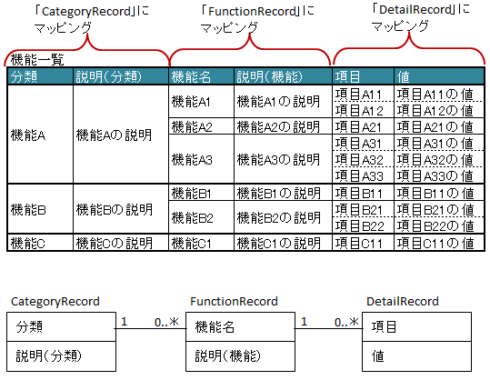

-
@Target(value={METHOD,FIELD}) @Retention(value=RUNTIME) @Documented public @interface XlsNestedRecords
アノテーションXlsHorizontalRecordsやXlsVerticalRecordsのレコード用のクラスにおいて、 ツリー構造のように入れ子になっている表をマッピングする際に使用します。一対多の関係
一対多の関係を表現する際には、Collection(List/Set)または、配列で指定します。
- 親子関係は、結合しているかで表現します。
- 親に指定しているJavaBeanクラスは、子や孫には指定することができません。
- 属性
XlsHorizontalRecords.terminateLabel()などの 終端や空のレコードの判定は、入れ子になったレコードごとに判定されます。 - 読み込みの際、アノテーション
XlsIgnorableで、空のレコードを読み飛ばした結果、 レコード数が0件となった場合は、要素数0個リストや配列が設定されます。
// シート用クラス @XlsSheet(name="機能") public class SampleSheet { @XlsHorizontalRecords(tableLabel="機能覧") private List<CategoryRecord> categories; } // レコード用クラス（分類） public class CategoryRecord { @XlsColumn(columnName="分類") private String name; @XlsColumn(columnName="説明（分類）") private String description; // ネストしたレコードのマッピング @XlsNestedRecords private List<FunctionRecord> functions; } // レコード用クラス（機能） public class FunctionRecord { @XlsColumn(columnName="機能名") private String name; @XlsColumn(columnName="説明（機能）") private String description; // ネストしたレコードのマッピング @XlsNestedRecords private List<DetailRecord> details; } // レコード用クラス（詳細） public class DetailRecord { @XlsColumn(columnName="項目") private String name; @XlsColumn(columnName="値") private String value; }一対多の関係
一対一の関係
一対一の関係をマッピングする際には、ネストしたクラスを直接指定します。
クラス定義などの制約は、基本的に一対多のときと同じです。
// シート用クラス @XlsSheet(name="学期末テスト") public class SampleSheet { @XlsHorizontalRecords(tableLabel="テスト結果", bottom=2) private List<UserRecord> users; } // レコード用クラス（生徒情報） public class UserRecord { @XlsColumn(columnName="No.") private int no; @XlsColumn(columnName="クラス", merged=true) private String className; @XlsColumn(columnName="氏名") private String name; // ネストしたレコードのマッピング @XlsNestedRecords private ResultRecord result; } // レコード用クラス（テスト結果） public class ResultRecord { @XlsColumn(columnName="国語") private int kokugo; @XlsColumn(columnName="算数") private int sansu; @XlsColumn(columnName="合計") private int sum; }
一対一の関係
- 導入されたバージョン:
- 1.4
- バージョン:
- 2.0
- 作成者:
- T.TSUCHIE
-
-
任意要素のサマリー
任意要素 修飾子とタイプ 任意要素と説明 ProcessCase[]cases適用するケースを指定します。Class<?>recordClassレコードのマッピング先のクラスを指定します。
-
-
-
要素の詳細
-
recordClass
public abstract Class<?> recordClass
レコードのマッピング先のクラスを指定します。指定しない場合は、Genericsの定義タイプが自動的に採用されます。
- デフォルト:
- java.lang.Object.class
-
-
-
cases
public abstract ProcessCase[] cases
適用するケースを指定します。- 戻り値:
- 何も指定しない場合は全てのケースに適用されます。
- 導入されたバージョン:
- 2.0
- デフォルト:
- {}
-
-